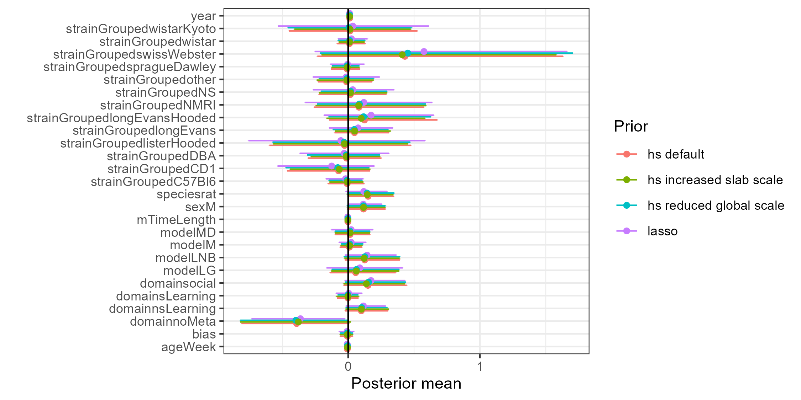

Packages
First, load in the necessary packages. In addition, if you are
running the model locally on a multi-core machine, you can set
options(mc.cores = 4). This ensures the different MCMC
chains will be run in parallel, making estimation faster.
Data
In this application, we will work with the bonapersona data (Bonapersona et al., 2019). The data and codebook can be found here. First, we read in the data and make sure all relevant variables are of the correct type.
descriptives(bonapersona)[, c("name", "type", "n", "unique", "mean", "sd", "v")]#> name type n unique mean sd v
#> 1 exp integer 734 411 222.644 111.88 NA
#> 2 id integer 734 212 99.402 60.03 NA
#> 3 author character 734 209 NA NA 0.990
#> 4 year integer 734 21 2011.014 4.45 NA
#> 5 journal character 734 69 NA NA 0.945
#> 6 species factor 734 3 NA NA 0.433
#> 7 strainGrouped factor 734 15 NA NA 0.762
#> 8 origin factor 734 4 NA NA 0.617
#> 9 sex factor 734 3 NA NA 0.373
#> 10 ageWeek numeric 721 25 13.333 5.75 NA
#> 11 model factor 734 6 NA NA 0.667
#> 12 mTimeStart integer 734 12 2.357 2.51 NA
#> 13 mTimeEnd integer 734 18 12.802 4.39 NA
#> 14 mHoursAve numeric 734 33 54.076 47.73 NA
#> 15 mCageGrouped factor 734 4 NA NA 0.485
#> 16 mLDGrouped factor 734 5 NA NA 0.469
#> 17 mRepetition factor 734 7 NA NA 0.446
#> 18 mControlGrouped factor 734 4 NA NA 0.069
#> 19 hit2Grouped factor 734 3 NA NA 0.493
#> 20 testAuthorGrouped factor 734 27 NA NA 0.894
#> 21 testLDGrouped factor 734 4 NA NA 0.295
#> 22 varAuthorGrouped factor 734 47 NA NA 0.914
#> 23 waterT factor 734 9 NA NA 0.125
#> 24 waterTcate factor 734 5 NA NA 0.123
#> 25 freezingType factor 734 10 NA NA 0.221
#> 26 retentionGrouped factor 734 5 NA NA 0.520
#> 27 directionGrouped factor 734 5 NA NA 0.648
#> 28 effectSizeCorrection integer 5 2 1.000 0.00 NA
#> 29 cut_nC integer 37 2 1.000 0.00 NA
#> 30 n_notRetriev integer 5 2 1.000 0.00 NA
#> 31 nC numeric 734 25 10.719 4.07 NA
#> 32 meanC numeric 734 412 167.110 112.13 NA
#> 33 sdC numeric 734 499 73.919 62.43 NA
#> 34 seC numeric 734 209 23.314 19.61 NA
#> 35 nE numeric 734 25 11.200 4.15 NA
#> 36 meanE numeric 734 430 163.209 114.28 NA
#> 37 sdE numeric 734 500 76.684 62.99 NA
#> 38 seE numeric 734 206 23.554 19.54 NA
#> 39 dataFrom factor 734 4 NA NA 0.288
#> 40 seqGeneration factor 734 3 NA NA 0.487
#> 41 baseline factor 734 4 NA NA 0.412
#> 42 allocation factor 734 3 NA NA 0.170
#> 43 housing factor 734 2 NA NA 0.000
#> 44 blindExp factor 734 4 NA NA 0.429
#> 45 control factor 734 4 NA NA 0.043
#> 46 outAss factor 734 4 NA NA 0.456
#> 47 outBlind factor 734 5 NA NA 0.654
#> 48 incData factor 734 3 NA NA 0.219
#> 49 waterTNum numeric 48 8 22.292 1.37 NA
#> 50 each integer 734 734 367.500 212.03 NA
#> 51 mTimeLength integer 734 19 10.446 5.61 NA
#> 52 speciesStrainGrouped factor 734 16 NA NA 0.762
#> 53 blindRand factor 734 3 NA NA 0.317
#> 54 bias numeric 734 9 2.884 0.75 NA
#> 55 tV factor 734 60 NA NA 0.929
#> 56 anxiety integer 734 2 0.486 0.50 NA
#> 57 sLearning numeric 734 2 0.277 0.45 NA
#> 58 nsLearning numeric 734 2 0.143 0.35 NA
#> 59 social integer 734 2 0.063 0.24 NA
#> 60 multiply integer 734 2 -0.272 0.96 NA
#> 61 noMeta numeric 734 2 0.031 0.17 NA
#> 62 domain factor 734 6 NA NA 0.662
#> 63 directionQual numeric 617 4 0.183 0.58 NA
#> 64 yi numeric 734 726 0.243 1.34 NA
#> 65 vi numeric 734 728 0.263 0.36 NAModerators
For this application, we use a smaller selection of moderators than in Bonapersona et al. (2019).
datsel <- bonapersona[ , c("yi", "vi", "author", "mTimeLength", "year", "model", "ageWeek", "strainGrouped", "bias", "species", "domain", "sex")]Two-level model
First, for simplicity, we run a two-level model ignoring the fact that certain effect sizes come from the same study.
dat2l <- datsel
dat2l[["author"]] <- NULLTwo-level model with the lasso prior
We start with running a penalized meta-analysis using the lasso prior. Compared to the horseshoe prior, the lasso is easier to use because it has only two hyperparameters to set. However, the lighter tails of the lasso can result in large coefficients being shrunken too much towards zero thereby leading to potentially more bias compared to the regularized horseshoe prior.
For the lasso prior, we need to specify the degrees of freedom
df and the scale. Both default to 1. The
degrees of freedom determines the chi-square prior that is specified for
the inverse-tuning parameter. Increasing the degrees of freedom will
allow larger values for the inverse-tuning parameter, leading to less
shrinkage. Increasing the scale parameter will also result in less
shrinkage. The influence of these hyperparameters can be visualized
through the implemented shiny app, which can be called via
shiny_prior().
fit_lasso <- brma(yi ~ .,
data = dat2l,
vi = "vi",
method = "lasso",
prior = c(df = 1, scale = 1),
mute_stan = FALSE)Assessing convergence and interpreting the results
We can request the results using the summary function.
Before we interpret the results, we need to ensure that the MCMC chains
have converged to the posterior distribution. Two helpful diagnostics
provided in the summary are the number of effective posterior samples
n_eff and the potential scale reduction factor
Rhat. n_eff is an estimate of the number of
independent samples from the posterior. Ideally, the ratio
n_eff to total samples is as close to 1 as possible.
Rhat compares the between- and within-chain estimates and
is ideally close to 1 (indicating the chains have mixed well). Should
any values for n_eff or Rhat be far from these
ideal values, you can try increasing the number of iterations through
the iter argument. By default, the brma
function runs four MCMC chains with 2000 iterations each, half of which
is discarded as burn-in. As a result, a total of 4000 iterations is
available on which posterior summaries are based. If this does not help,
non-convergence might indicate a problem with the model
specification.
#> mean sd 2.5% 97.5% n_eff Rhat
#> Intercept -20.7265 14.4136 -50.9609 3.6187 1657 1
#> mTimeLength -0.0032 0.0048 -0.0143 0.0049 2070 1
#> year 0.0104 0.0072 -0.0017 0.0254 1660 1
#> modelLG 0.0855 0.1438 -0.1759 0.4025 2283 1
#> modelLNB 0.1430 0.1059 -0.0270 0.3721 1210 1
#> modelM 0.0213 0.0496 -0.0695 0.1329 2208 1
#> modelMD 0.0229 0.0773 -0.1253 0.1856 2320 1
#> ageWeek -0.0073 0.0053 -0.0187 0.0015 1364 1
#> strainGroupedC57Bl6 -0.0189 0.0662 -0.1587 0.1117 2193 1
#> strainGroupedCD1 -0.1158 0.1813 -0.5305 0.2004 2074 1
#> strainGroupedDBA -0.0253 0.1625 -0.3563 0.3059 1591 1
#> strainGroupedlisterHooded -0.0540 0.3135 -0.7133 0.5434 2062 1
#> strainGroupedlongEvans 0.0712 0.1205 -0.1421 0.3397 2253 1
#> strainGroupedlongEvansHooded 0.1790 0.2181 -0.1823 0.6557 2302 1
#> strainGroupedNMRI 0.1200 0.2423 -0.3336 0.6518 2225 1
#> strainGroupedNS 0.0289 0.1497 -0.2674 0.3448 2842 1
#> strainGroupedother -0.0227 0.1263 -0.2832 0.2302 2079 1
#> strainGroupedspragueDawley -0.0041 0.0615 -0.1343 0.1176 1921 1
#> strainGroupedswissWebster 0.5557 0.4900 -0.2266 1.6393 2230 1
#> strainGroupedwistar 0.0236 0.0567 -0.0807 0.1512 2078 1
#> strainGroupedwistarKyoto 0.0295 0.2698 -0.5350 0.5813 2392 1
#> bias -0.0086 0.0290 -0.0716 0.0473 2087 1
#> speciesrat 0.1191 0.0877 -0.0203 0.3179 1380 1
#> domainsLearning 0.0017 0.0501 -0.1012 0.1072 1986 1
#> domainnsLearning 0.1159 0.0815 -0.0215 0.2892 1553 1
#> domainsocial 0.1702 0.1183 -0.0249 0.4232 1600 1
#> domainnoMeta -0.3615 0.1843 -0.7299 -0.0184 1212 1
#> sexM 0.1205 0.0689 -0.0017 0.2605 1602 1
#> tau2 0.4291 0.0394 0.3524 0.5098 1112 1If we are satisfied with the convergence, we can continue looking at
the posterior summary statistics. The summary function
provides the posterior mean estimate for the effect of each moderator.
Since Bayesian penalization does not automatically shrink estimates
exactly to zero, some additional criterion is needed to determine which
moderators should be selected in the model. Currently, this is done
using the 95% credible intervals, with a moderator being selected if
zero is excluded in this interval. In the summary this is
denoted by an asterisk for that moderator. In this model, the only
significant moderator is the dummy variable for sex. All other
coefficients are not significant after being shrunken towards zero by
the lasso prior.
Also note the summary statistics for tau2, the
(unexplained) residual between-studies heterogeneity. The 95% credible
interval for this coefficient excludes zero, indicating that there is a
non-zero amount of unexplained heterogeneity. It is customary to express
this heterogeneity in terms of
,
the percentage of variation across studies that is due to heterogeneity
rather than chance (Higgins and Thompson, 2002; Higgins et al., 2003).
The helper function I2() computes the posterior
distribution of
based on the MCMC draws of tau2:
I2(fit_lasso)#> mean sd 2.5% 25% 50% 75% 97.5%
#> I2 68 2 64 67 68 69 72Two-level model with the horseshoe prior
Next, we look into the regularized horseshoe prior. The horseshoe prior has five hyperparameters that can be set. Three parameters are degrees of freedom parameters which influence the tails of the distributions in the prior. Generally, it is not needed to specify different values for these hyperparameters. Here, we focus instead on the global scale parameter and the scale of the slab.
# use the default settings
fit_hs1 <- brma(yi ~ .,
data = dat2l,
vi = "vi",
method = "hs",
prior = c(df = 1, df_global = 1, df_slab = 4, scale_global = 1, scale_slab = 1, relevant_pars = NULL),
mute_stan = FALSE)
# reduce the global scale
fit_hs2 <- brma(yi ~ .,
data = dat2l,
vi = "vi",
method = "hs",
prior = c(df = 1, df_global = 1, df_slab = 4, scale_global = 0.1, scale_slab = 1, relevant_pars = NULL),
mute_stan = FALSE)
# increase the scale of the slab
fit_hs3 <- brma(yi ~ .,
data = dat2l,
vi = "vi",
method = "hs",
prior = c(df = 1, df_global = 1, df_slab = 4, scale_global = 1, scale_slab = 5, relevant_pars = NULL),
mute_stan = FALSE)Note that the horseshoe prior results in some divergent transitions. This can be an indication of non-convergence. However, these divergences arise often when using the horseshoe prior and as long as there are not too many of them, the results can still be used.
Next, we plot the posterior mean estimates for a selection of moderators for the different priors.
make_plotdat <- function(fit, prior){
plotdat <- data.frame(fit$coefficients)
plotdat$par <- rownames(plotdat)
plotdat$Prior <- prior
return(plotdat)
}
df0 <- make_plotdat(fit_lasso, prior = "lasso")
df1 <- make_plotdat(fit_hs1, prior = "hs default")
df2 <- make_plotdat(fit_hs2, prior = "hs reduced global scale")
df3 <- make_plotdat(fit_hs3, prior = "hs increased slab scale")
df <- rbind.data.frame(df0, df1, df2, df3)
df <- df[!df$par %in% c("Intercept", "tau2"), ]
pd <- 0.5
ggplot(df, aes(x=mean, y=par, group = Prior)) +
geom_errorbar(aes(xmin=X2.5., xmax=X97.5., colour = Prior), width=.1, position = position_dodge(width = pd)) +
geom_point(aes(colour = Prior), position = position_dodge(width = pd)) +
geom_vline(xintercept = 0) +
theme_bw() + xlab("Posterior mean") + ylab("")
We can see that, in general, the different priors give quite similar
results in this application. A notable exception is the estimate for the
dummy variable testAuthorGrouped_stepDownAvoidance which is
much smaller for the lasso compared to the horseshoe specification. This
indicates that the lasso can shrink large coefficients more towards zero
whereas the horseshoe is better at keeping them large.
Three-level model
Finally, we can also take into account the fact that some effect sizes might come from the same study by fitting a three-level model as follows:
Standardization
It is possible to override the default standardization, which
standardizes all variables (including dummies). To do so, first manually
standardize any variables that must be standardized. Then, in the call
to brma(), provide a named list with elements
list(center = ..., scale = ...). For variables that are
not to be standardized, use
center = 0, scale = 1. This retains their original scale.
For variables that are to be standardized, use their original
center and scale to restore the coefficients
to their original scale.
In the example below, we standardize a continuous predictor, but we do not standardize the dummies:
moderators <- model.matrix(yi~ageWeek + strainGrouped, data = datsel)[, -1]
scale_age <- scale(moderators[,1])
stdz <- list(center = c(attr(scale_age, "scaled:center"), rep(0, length(levels(datsel$strainGrouped))-1)),
scale = c(attr(scale_age, "scaled:scale"), rep(1, length(levels(datsel$strainGrouped))-1)))
moderators <- data.frame(datsel[c("yi", "vi", "author")], moderators)
fit_std <- brma(yi ~ .,
data = moderators,
vi = "vi",
study = "author",
method = "lasso",
prior = c(df = 1, scale = 1),
standardize = stdz,
mute_stan = FALSE)Note that, in this example, only ageWeek is
standardized; the remaining (dummy) variables are untouched. The object
stdz provides the original center and scale for
ageWeek, which allows brma() to properly
rescale the coefficient for this moderator. As the center and scale for
all remaining (dummy) variables are 0 and 1, these coefficients are
not rescaled. See the pema paper for a
discussion of standardization and further references.